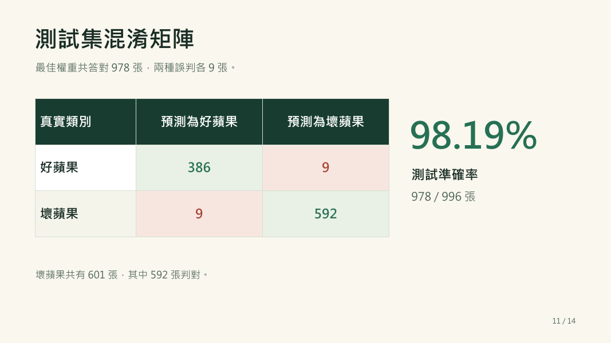
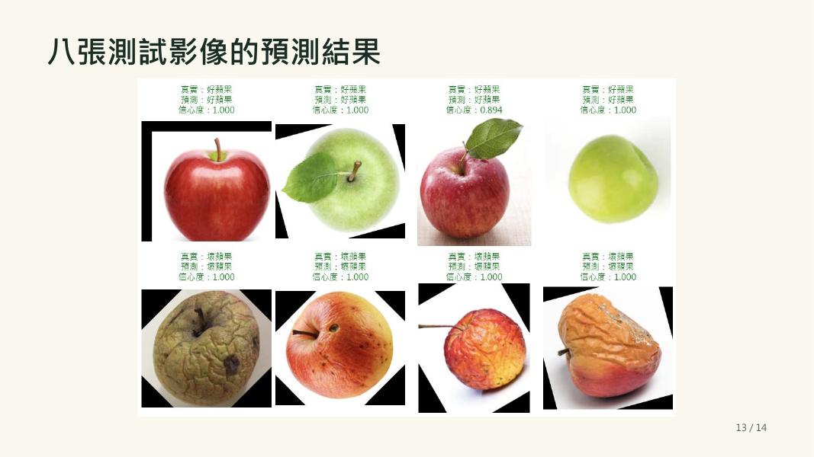

辨識好蘋果與壞蘋果：PyTorch CNN
專案簡介
這是我的個人專案：用 PyTorch 從頭訓練一個卷積神經網路（CNN），判斷照片中的蘋果是好蘋果（標籤 0）還是壞蘋果（標籤 1）。最後在 996 張測試影像上答對 978 張，測試準確率 98.19%，Macro F1 為 0.9811。
Demo 影片：https://youtu.be/V8l_jQL-sek
使用技術
- Python、PyTorch 2.2.2（CPU 版）
- 4 層卷積的 CNN，搭配 BatchNorm2d、ReLU、最大池化與 Dropout
- Adam 最佳化器、CrossEntropyLoss、ReduceLROnPlateau 學習率調整
- 評估指標：準確率、精確率、召回率、F1、Macro F1、混淆矩陣
運作方式
- 整理資料：共 5,031 張蘋果影像。先依檔案內容去除重複的圖片，避免同一張圖同時出現在訓練集和測試集；再從原訓練資料按類別抽約 15% 當驗證集。
- 前處理：每張照片轉成 RGB、縮放到 64 × 64，RGB 各通道以 0.5 為平均值、0.5 為標準差正規化，輸入形狀為 3 × 64 × 64。
- 模型架構：兩組卷積，每組兩層（32、64 通道），每層後接 BatchNorm2d 與 ReLU，每組最後做一次 2 × 2 最大池化；攤平成 16,384 維向量後，接 256 單元的全連接層（ReLU、Dropout 0.5），輸出好、壞兩類的 logits。
- 訓練：Batch size 32、10 個回合，Adam 初始學習率 0.001，ReduceLROnPlateau（patience 2、factor 0.5）。
- 挑選模型：以驗證 loss 最低的回合為準。第 9 回合驗證 loss 為 0.0423，第 10 回合回升到 0.2262、驗證準確率也從 98.18% 掉到 91.90%，所以最終測試採用第 9 回合的權重，而不是最後一回合。
- 測試與比較：用同一份資料切分比較兩次訓練設定。
| 資料切分 | 好蘋果 | 壞蘋果 | 合計 |
|---|---|---|---|
| 訓練集 | 1,439 | 1,991 | 3,430 |
| 驗證集 | 254 | 351 | 605 |
| 測試集 | 395 | 601 | 996 |
| 合計 | 2,088 | 2,943 | 5,031 |
| 比較項目 | 前次訓練 | 本次訓練 |
|---|---|---|
| 批次大小／訓練回合 | 64／5 | 32／10 |
| 最佳回合 | 4 | 9 |
| 測試準確率 | 96.49% | 98.19% |
| 測試 Macro F1 | 0.9638 | 0.9811 |
| 壞蘋果誤判為好蘋果 | 34 張 | 9 張 |
兩次訓練使用的 PyTorch 版本不同，所以這個差距代表的是整體訓練設定的差異，不能歸因於單一參數。
成果截圖




心得
這個專案讓我體會到，準確率高不代表模型可靠，還要看資料怎麼切、模型怎麼選。先去除重複圖片，測試結果才不會被灌水；用驗證 loss 挑回合，也避開了最後一回合突然變差的權重。
對這個任務來說，把壞蘋果誤判成好蘋果的代價比較高，所以我特別追蹤這一種錯誤，它從 34 張降到 9 張。比較兩次訓練時，我也記下 PyTorch 版本不同這個變因，避免把進步過度歸功於某一個設定。